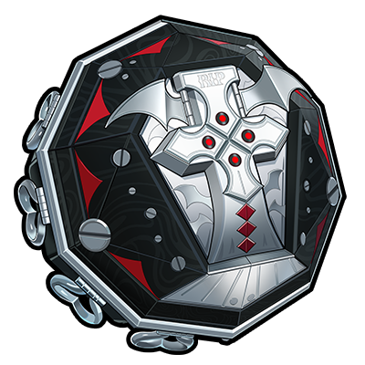

{{22}} 11號
11號{{23}} 可琳
可琳{{7}} 哲
哲{{20}} 妮可
妮可{{24}} 安東
安東{{2}} 安比
安比{{25}} 本
本{{27}} 格莉絲
格莉絲{{19}} 比利
比利{{26}} 珂蕾妲
珂蕾妲{{29}} 艾蓮
艾蓮{{28}} 萊卡恩
萊卡恩{{89}} 蒼角
蒼角{{21}} 貓又
貓又{{8}} 鈴
鈴{{30}} 麗娜
麗娜{{31}} 朱鳶
朱鳶{{368}} 簡
簡{{369}} 賽斯
賽斯{{350}} 青衣
青衣{{381}} 凱撒
凱撒{{382}} 柏妮思
柏妮思{{126}} 派派
派派{{125}} 露西
露西{{529}} 月城柳
月城柳{{530}} 萊特
萊特{{537}} 星見雅
星見雅{{538}} 淺羽悠真
淺羽悠真{{589}} 伊芙琳
伊芙琳{{588}} 耀嘉音
耀嘉音{{620}} 扳機
扳機{{619}} 波可娜
波可娜{{618}} 零號·安比
零號·安比{{707}} 雨果
雨果{{626}} 薇薇安
薇薇安{{752}} 儀玄
儀玄{{750}} 橘福福
橘福福{{751}} 潘引壺
潘引壺{{838}} 愛麗絲
愛麗絲{{837}} 浮波柚葉
浮波柚葉{{901}} 「席德」
「席德」{{902}} 奧菲絲&「鬼火」
奧菲絲&「鬼火」{{909}} 伊德海莉
伊德海莉{{908}} 狛野真斗
狛野真斗{{907}} 盧西婭
盧西婭{{932}} 琉音
琉音{{934}} 般岳
般岳{{960}} 照
照{{961}} 葉瞬光
葉瞬光{{995}} 千夏
千夏{{998}} 愛芮
愛芮{{1038}} 南宮羽
南宮羽{{1039}} 希希芙
希希芙{{1073}} 星徽·比利
星徽·比利{{1072}} 普羅米婭
普羅米婭{{1082}} 佩洛伊斯
佩洛伊斯{{1084}} 維琳娜
維琳娜{{1085}} 諾姆
諾姆{{1113}} 希格莉德
希格莉德{{1112}} 蕾米埃爾
蕾米埃爾{{1185}} 克拉蕾
克拉蕾{{1186}} 洛克茜
洛克茜{{1202}} 賽維裡安·洛威爾
賽維裡安·洛威爾{{1201}} 菲歐妮·蕾法愛菈
菲歐妮·蕾法愛菈{{wengine:1209}}
緋月銀棺{{wengine:1192}} 「月相」-弦
「月相」-弦{{wengine:1191}} 喵運當頭
喵運當頭{{wengine:1190}} 血髓秘匣
血髓秘匣{{wengine:1189}} 猩紅渴望
猩紅渴望{{wengine:1188}} 驍騎禮讚
驍騎禮讚{{wengine:1174}} 空羽復歸之詩
空羽復歸之詩{{wengine:1134}} 首席跟班
首席跟班{{wengine:1106}} 咚噠回聲
咚噠回聲{{wengine:1105}} 日冕遺蛻
日冕遺蛻{{wengine:1104}} 琳琅鎏心
琳琅鎏心{{wengine:1088}} 輝騎面鎧
輝騎面鎧{{wengine:1087}} 朔月裁霜
朔月裁霜{{wengine:1078}} 鱗齒尋蹤
鱗齒尋蹤{{wengine:1068}} 炎炙沸釜
炎炙沸釜{{wengine:1067}} 霓虹妄想
霓虹妄想{{wengine:1047}} 殼中之靈
殼中之靈{{wengine:1015}} 思絡成歌
思絡成歌{{wengine:984}} 青漪靈鼎
青漪靈鼎{{wengine:983}} 半糖雪兔
半糖雪兔{{wengine:982}} 雲霓孤光
雲霓孤光{{wengine:965}} 怒目金剛
怒目金剛{{wengine:964}} 昨夜來電
昨夜來電{{wengine:937}} 海妖搖籃
海妖搖籃{{wengine:936}} 燔火朧夜
燔火朧夜{{wengine:935}} 鑄夢爐歌
鑄夢爐歌{{wengine:929}} 來自「海巫師」的尋夢瓶
來自「海巫師」的尋夢瓶{{wengine:910}} 機巧心種
機巧心種{{wengine:903}} 十方鍛星
十方鍛星{{wengine:877}} 狸法七變化
狸法七變化{{wengine:851}} 福虓爐爐
福虓爐爐{{wengine:787}} 「灰燼」-鈷藍
「灰燼」-鈷藍{{wengine:786}} 電波漫步
電波漫步{{wengine:785}} 幻變魔方
幻變魔方{{wengine:784}} 光影刻刀
光影刻刀{{wengine:783}} 震元奇樞
震元奇樞{{wengine:782}} 青溟籠舍
青溟籠舍{{wengine:706}} 千面日隕
千面日隕{{wengine:705}} 飛鳥星夢
飛鳥星夢{{wengine:701}} 索魂影眸
索魂影眸{{wengine:622}} 裁紙刀
裁紙刀{{wengine:621}} 犧牲潔純
犧牲潔純{{wengine:591}} 心弦夜響
心弦夜響{{wengine:590}} 玲瓏妝匣
玲瓏妝匣{{wengine:541}} 殘心青囊
殘心青囊{{wengine:540}} 霰落星殿
霰落星殿{{wengine:539}} 強音熱望
強音熱望{{wengine:534}} 焰心桂冠
焰心桂冠{{wengine:531}} 時流賢者
時流賢者{{wengine:525}} 灼心搖壺
灼心搖壺{{wengine:389}} 奔襲獠牙
奔襲獠牙{{wengine:378}} 維序者-特化型
維序者-特化型{{wengine:377}} 淬鋒鉗刺
淬鋒鉗刺{{wengine:355}} 玉壺青冰
玉壺青冰{{wengine:354}} 鎏金花信
鎏金花信{{wengine:274}} 轟鳴座駕
轟鳴座駕{{wengine:273}} 好鬥的阿炮
好鬥的阿炮{{wengine:87}} 防暴者VI型
防暴者VI型{{wengine:86}} 啜泣搖籃
啜泣搖籃{{wengine:85}} 深海訪客
深海訪客{{wengine:84}} 嵌合編譯器
嵌合編譯器{{wengine:83}} 拘縛者
拘縛者{{wengine:82}} 燃獄齒輪
燃獄齒輪{{wengine:81}} 硫磺石
硫磺石{{wengine:80}} 鋼鐵肉墊
鋼鐵肉墊{{wengine:79}} 左輪轉子
左輪轉子{{wengine:78}} 逍遙遊球
逍遙遊球{{wengine:77}} 加農轉子
加農轉子{{wengine:76}} 含羞惡面
含羞惡面{{wengine:75}} 比格氣缸
比格氣缸{{wengine:74}} 旋鑽機-赤軸
旋鑽機-赤軸{{wengine:73}} 仿製星徽引擎
仿製星徽引擎{{wengine:72}} 居家服務員
居家服務員{{wengine:71}} 聚寶箱
聚寶箱{{wengine:69}} 春日融融
春日融融{{wengine:68}} 兔能環
兔能環{{wengine:67}} 觸電唇彩
觸電唇彩{{wengine:66}} 雙生泣星
雙生泣星{{wengine:65}} 正版變身器
正版變身器{{wengine:64}} 貴重骨核
貴重骨核{{wengine:63}} 人為刀俎
人為刀俎{{wengine:62}} 星徽引擎
星徽引擎{{wengine:61}} 雨林饕客
雨林饕客{{wengine:60}} 時光切片
時光切片{{wengine:59}} 街頭巨星
街頭巨星{{wengine:58}} 「恆等式」-變格
「恆等式」-變格{{wengine:57}} 「恆等式」-本格
「恆等式」-本格{{wengine:56}} 「電磁暴」-参式
「電磁暴」-参式{{wengine:55}} 「電磁暴」-貳式
「電磁暴」-貳式{{wengine:54}} 「電磁暴」-壹式
「電磁暴」-壹式{{wengine:53}} 「湍流」-斧型
「湍流」-斧型{{wengine:52}} 「湍流」-矢型
「湍流」-矢型{{wengine:51}} 「湍流」-銃型
「湍流」-銃型{{wengine:50}} 「殘響」-Ⅲ型
「殘響」-Ⅲ型{{wengine:49}} 「殘響」-Ⅱ型
「殘響」-Ⅱ型{{wengine:48}} 「殘響」-Ⅰ型
「殘響」-Ⅰ型{{wengine:47}} 「月相」-朔
「月相」-朔{{wengine:46}} 「月相」-晦
「月相」-晦{{wengine:45}} 「月相」-望
「月相」-望{{wengine:3}} 德瑪拉電池Ⅱ型
德瑪拉電池Ⅱ型{{disc:1177}} 荊棘玫瑰
荊棘玫瑰{{disc:1176}} 讖羽之誓
讖羽之誓{{disc:1109}} 拂曉行紀
拂曉行紀{{disc:1108}} 呼嘯沙龍
呼嘯沙龍{{disc:1070}} 囚徒手記
囚徒手記{{disc:1069}} 雪兔夢遊仙境
雪兔夢遊仙境{{disc:993}} 流光詠嘆
流光詠嘆{{disc:992}} 滄浪行歌
滄浪行歌{{disc:914}} 月光騎士頌
月光騎士頌{{disc:913}} 拂曉生花
拂曉生花{{disc:790}} 山大王
山大王{{disc:789}} 雲巋如我
雲巋如我{{disc:625}} 如影相隨
如影相隨{{disc:624}} 法厄同之歌
法厄同之歌{{disc:547}} 折枝劍歌
折枝劍歌{{disc:546}} 靜聽嘉音
靜聽嘉音{{disc:392}} 混沌爵士
混沌爵士{{disc:391}} 原始龐克
原始龐克{{disc:137}} 獠牙重金屬
獠牙重金屬{{disc:136}} 極地重金屬
極地重金屬{{disc:135}} 雷暴重金屬
雷暴重金屬{{disc:134}} 混沌重金屬
混沌重金屬{{disc:133}} 炎獄重金屬
炎獄重金屬{{disc:132}} 靈魂搖滾
靈魂搖滾{{disc:131}} 激素龐克
激素龐克{{disc:130}} 自由藍調
自由藍調{{disc:129}} 震星迪斯可
震星迪斯可{{disc:128}} 河豚電音
河豚電音{{disc:127}} 啄木鳥電音
啄木鳥電音{{disc:5}} 搖擺爵士
搖擺爵士{{element:physical}} 物理
物理{{element:fire}} 火屬性
火屬性{{element:ice}} 冰屬性
冰屬性{{element:electric}} 電屬性
電屬性{{element:ether}} 以太
以太{{element:wind}} 風屬性
風屬性{{element:light}} 流明
流明{{element:frost}} 烈霜屬性
烈霜屬性{{profession:attack}} 強攻
強攻{{profession:breakthrough}} 擊破
擊破{{profession:anomaly}} 異常
異常{{profession:support}} 支援
支援{{profession:defensive}} 防護
防護{{profession:rupture}} 命破
命破{{profession:fengyu}} 鋒御
鋒御{{stat:hp}} 生命值
生命值{{stat:atk}} 攻擊力
攻擊力{{stat:def}} 防禦力
防禦力{{stat:impact}} 衝擊力
衝擊力{{stat:crit_rate}} 暴擊率
暴擊率{{stat:crit_dmg}} 暴擊傷害
暴擊傷害{{stat:anomaly_proficiency}} 異常精通
異常精通{{stat:anomaly_mastery}} 異常掌控
異常掌控{{stat:pen_ratio}} 穿透率
穿透率{{stat:pen_value}} 穿透值
穿透值{{stat:energy_regen}} 能量自動回復
能量自動回復{{stat:physical}}物理傷害加成{{stat:fire}}火屬性傷害加成{{stat:ice}}冰屬性傷害加成{{stat:electric}}電屬性傷害加成{{stat:ether}}以太傷害加成{{stat:wind}}風屬性傷害加成{{stat:perforation}} 貫穿力
貫穿力{{stat:energyaccumulation}} 閃能自動累積
閃能自動累積{{stat:accumulation}} 銳能自動累積
銳能自動累積{{stat:sharp}} 銳暴傷害
銳暴傷害{{rarity:s}} S級
S級{{rarity:a}} A級
A級{{rarity:b}} B級
B級{{action:normal}} 普通攻擊
普通攻擊{{action:special}} 特殊技
特殊技{{action:special_ready}} 強化特殊技
強化特殊技{{action:dodge}} 閃避
閃避{{action:support}} 支援技
支援技{{action:chain}} 連攜技
連攜技{{action:ultimate}} 終結技(未就緒)
終結技(未就緒){{action:ultimate_ready}} 終結技
終結技{{action:core}} 核心技
核心技{{action:move}} 移動
移動{{element:honededge}} 凜刃
凜刃{{element:auricink}} 玄墨
玄墨{{faction:cunning_hares}} 狡兔屋
狡兔屋{{faction:victoria_housekeeping_co}} 維多利亞居家服務
維多利亞居家服務{{faction:belobog_heavy_industries}} 白祇重工
白祇重工{{faction:obol_squad}} 防衛軍·奧波勒斯小隊
防衛軍·奧波勒斯小隊{{faction:hollow_special_operations_section_6}} 對空洞特別行動部第六課
對空洞特別行動部第六課{{faction:new_eridu_public_security}} 治安局·刑偵特勤組
治安局·刑偵特勤組{{faction:sons_of_calydon}} 卡呂冬之子
卡呂冬之子{{faction:stars_of_lyra}} 天琴座
天琴座{{faction:silver_squad}} 防衛軍·白銀小隊
防衛軍·白銀小隊{{faction:mocking_bird}} 反舌鳥
反舌鳥{{faction:yunkui_summit}} 雲巋山
雲巋山{{faction:spook_shack}} 怪啖屋
怪啖屋{{faction:krampus_compliance_authority}} 坎卜斯黑枝
坎卜斯黑枝{{faction:angels_of_delusion}} 妄想天使
妄想天使{{faction:metropolitan_order_division}} 治安局·都市秩序部
治安局·都市秩序部{{faction:phaethon}} 法厄同
法厄同{{faction:foreign_affairs_planning_office}} 外務籌策局
外務籌策局{{faction:covenant_of_dayat}} 達識結社
達識結社{{faction:airspace_patrol_department}} 空域巡戍局
空域巡戍局{{faction:flint_workshop}} 弗林特工坊
弗林特工坊{{custom:heavy_attack}}{{custom:stun}}{{custom:stun_dur}}{{custom:non_stun_dur}}{{custom:stun_value}}{{custom:stun_multiplier}}{{custom:mechanic_gauge}}{{custom:mechanic_point}}{{custom:anomaly_buildup}}{{custom:decibel}}{{custom:sharp_gauge}}{{custom:switch}}{{custom:dash_attack}}衝刺攻擊{{custom:dodge_counter}}閃避反擊{{custom:perfect_dodge}}極限閃避{{custom:quick_assist}}快速支援{{custom:defensive_assist}}招架支援{{custom:evasive_assist}}回避支援{{custom:assist_follow_up}}支援突擊{{custom:counter_assist}}反制支援{{custom:core_passive}}核心被動{{custom:additional_ability}}額外能力{{custom:anomaly_dmg}}異常傷害{{custom:sheer_dmg}}貫穿傷害{{custom:sharp_dmg}}毀傷{{custom:duo_chain}}雙連攜{{custom:physical_anomaly}}物理異常狀態{{custom:fire_anomaly}}火異常狀態{{custom:ice_anomaly}}冰異常狀態{{custom:electric_anomaly}}電異常狀態{{custom:ether_anomaly}}乙太異常狀態{{custom:wind_anomaly}}風異常狀態{{custom:light_anomaly}}流明異常狀態{{custom:frost_anomaly}}烈霜異常狀態{{custom:auricink_anomaly}}玄墨異常狀態{{custom:honededge_anomaly}}凜刃異常狀態{{custom:wind_anomaly_additional}}浸染